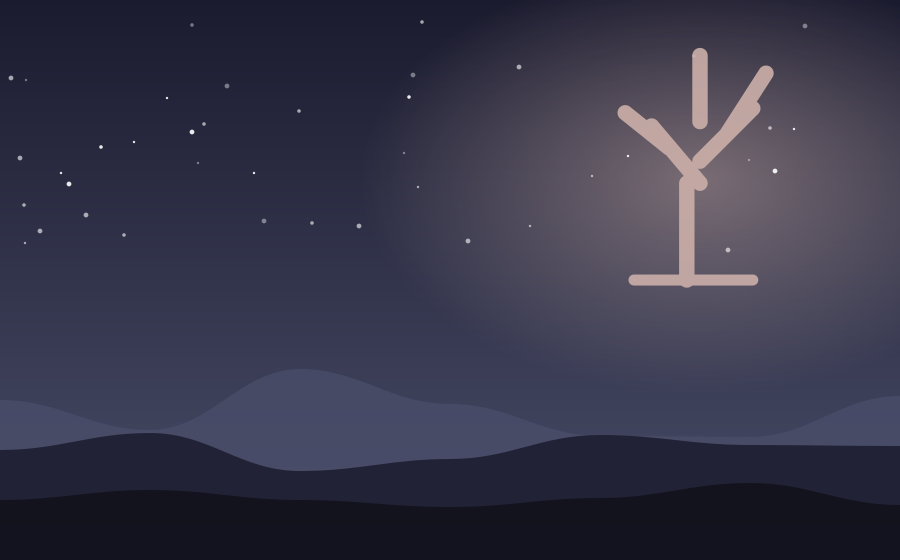

Chapter 1 of 1
Candlelight and Cold Corridors

The carriage left Adelaide at the gates of Ravenmoor Hall in a fine, bitter fog. The house rose before her like a sleeping giant, all black stone and shuttered windows, and in the topmost window, a single candle burned. "Nobody lives up there," the coachman muttered, and drove away much faster than the horses wished.
Her pupils were two pale children named Edmund and Clara, who spoke only in whispers and never left each other's side. "Mother says you may stay," Clara said at supper. Adelaide smiled politely. "I thought your mother had passed." "She did," said Edmund. "She doesn't mind."
That night, a cold draft drifted down the corridor, carrying the faint scent of lavender and the sound of slippers on stone. Adelaide followed it to the topmost room, where a woman in a gray dress sat at a window, brushing her hair with slow, sorrowful strokes. She did not turn. "They won't sleep unless I sing," she whispered. "Will you stay a little while?"
Adelaide, to her own astonishment, sat down on the floor and began to hum. The candle steadied. The cold lifted. And in the room below, two children finally slept.
— The End —